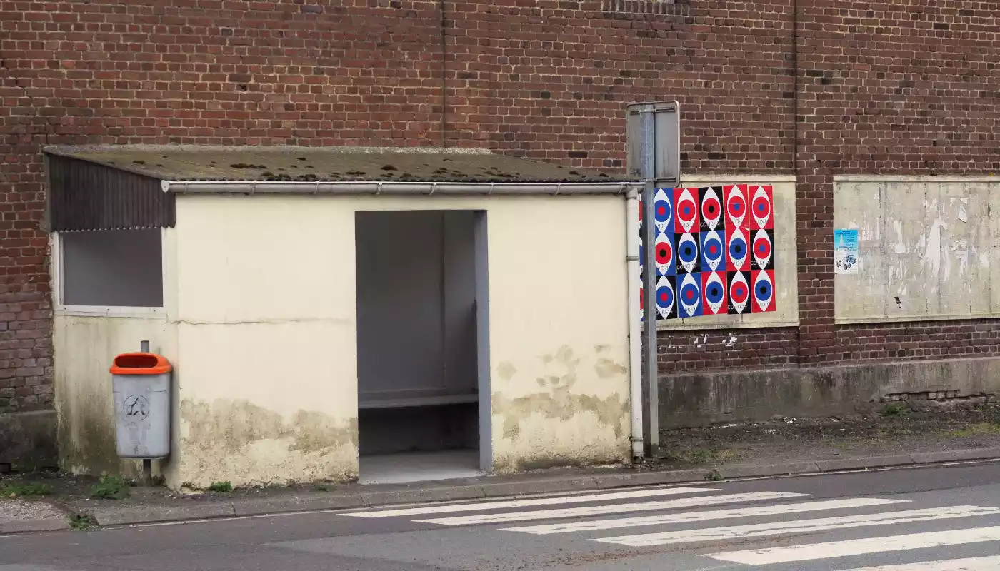
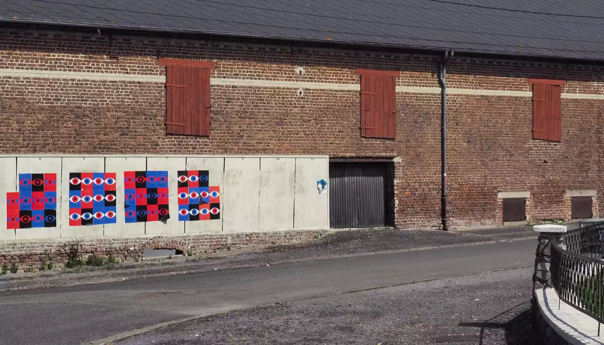
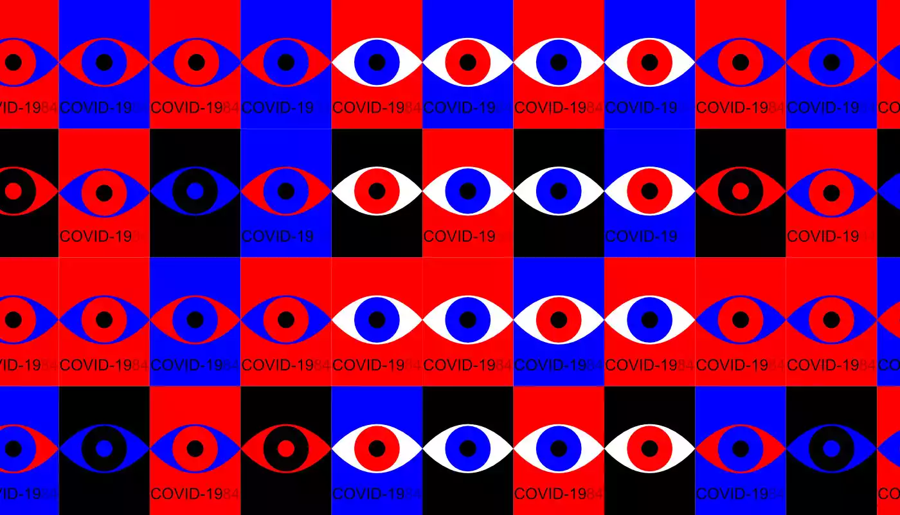
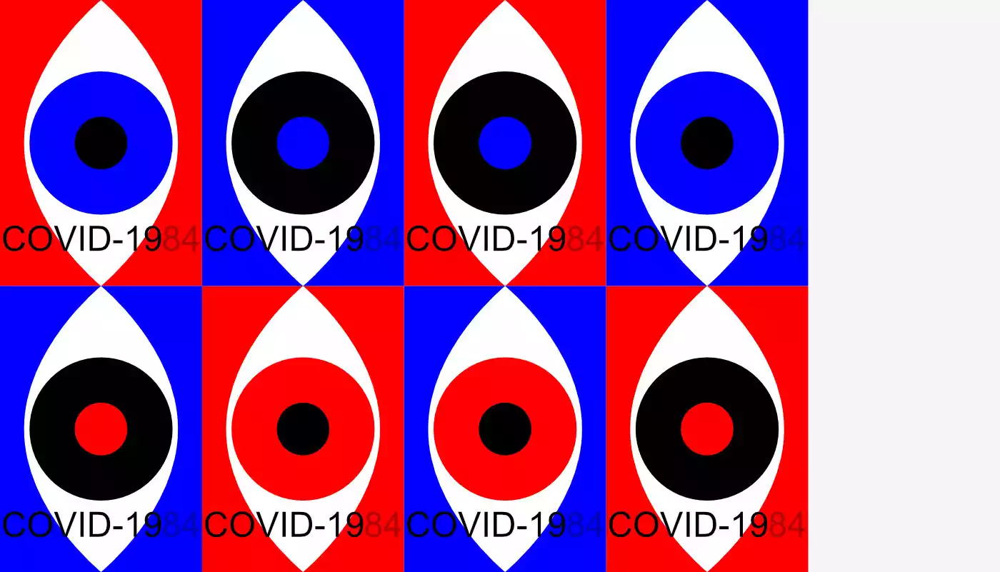
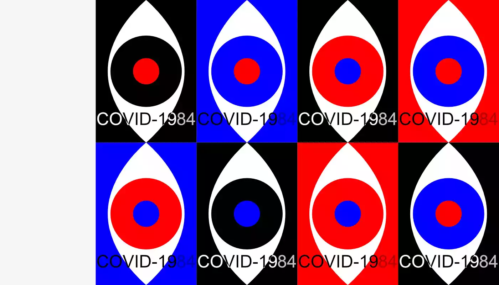
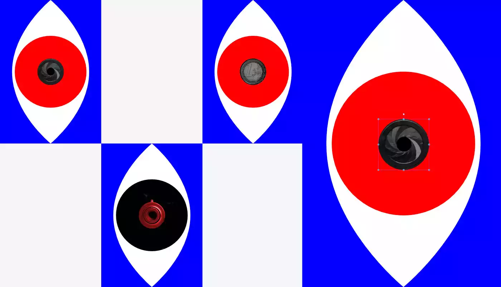
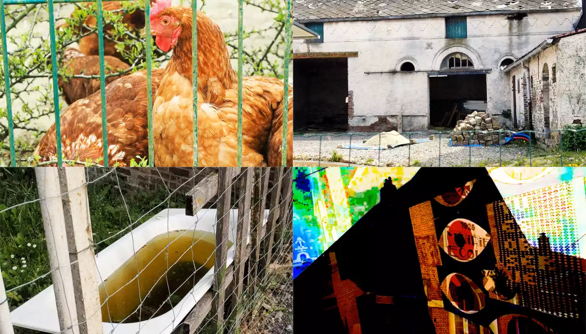
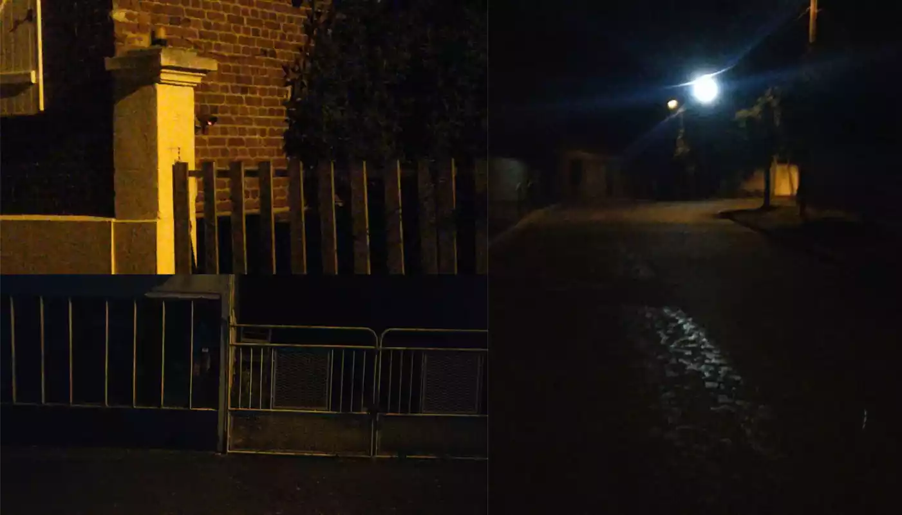
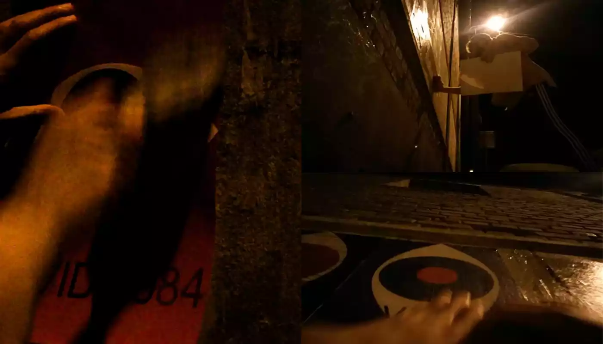

COVID-1984
Vidéo / Affichage de rue
Projet de graphisme d’utilité publique. Un affichage de rue pour lutter contre la surveillance de masse mise en place pour lutter contre la pandémie de COVID-19.
Le design se base sur des affiches simples qui révèlent leur dimensions angoissantes avec la répétition de l’affichage.
La vidéo permet de documenter le repérage des lieux, l’affichage de nuit et montrer le paysage avec ces affiches finalement collées.








